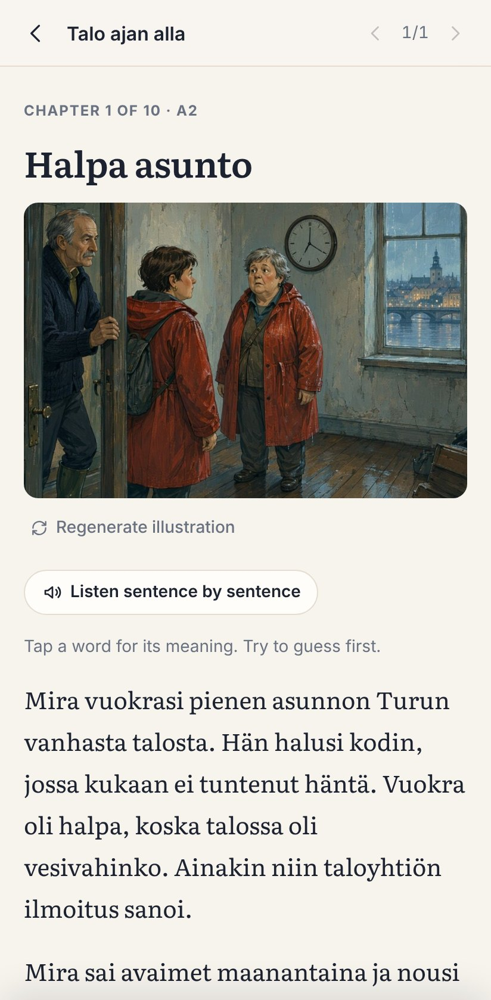
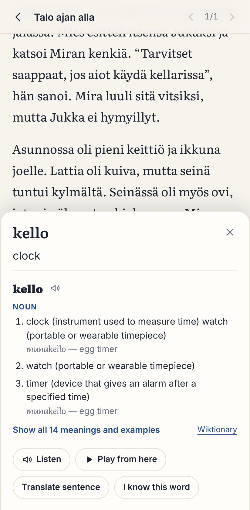
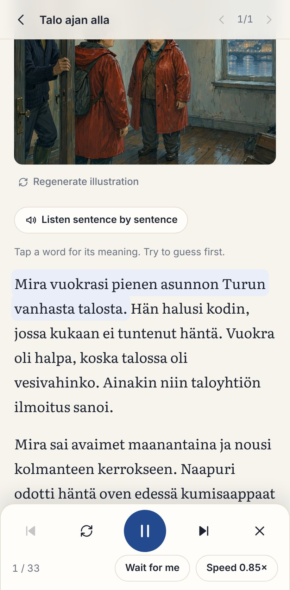
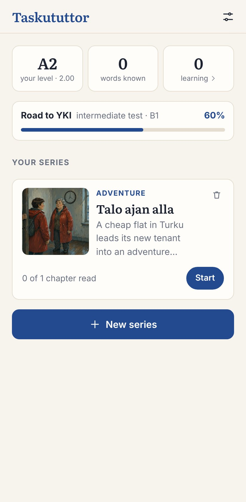

Finnish, learned by reading
A story written for you. In Finnish you can read.
Taskututtor writes a serialized novel at exactly your level, and a little above it. One chapter at a time, each shaped by how you read the last.

Your level
From your first two hundred words to full novels. Measured after every chapter, never guessed.
A real plot
Every series is planned from its first page to its ending. Questions are answered. Characters stay themselves.
Real Finnish
Natural sentences, made simple by word choice and repetition. Never by broken grammar.
The method
Read. Tap. Keep reading.
-
I
Choose your story
A mystery in Turku, a night train that never arrives, a comedy set in a sauna. Pick a genre or describe your own idea, and a series is planned for you alone.
-
II
Read, and tap what you don’t know
One tap shows a word’s meaning, its dictionary form and what its ending is doing. Another shows the whole sentence in your language.
-
III
The next chapter adapts
What you looked up and how the chapter felt set the level of the next one. Words you needed help with return until they stay.
Words
Every word, one tap away.
Finnish hides its words inside endings. Tap kellossa and you see kello, “clock”, and that the ending means “in”. Beneath it, a dictionary entry with the word’s other meanings and examples.
- Meaning, base form and grammar for every word of every chapter
- Whole-sentence translation when one word is not enough
- The app remembers what you know, and what you are still learning

Listening
Hear it at your own pace.
Listen sentence by sentence while you read along. The player waits after each one until you are ready, so there is time to read it again and recall every word.
- Repeat, step back, or let it run with pauses
- Three speeds, with the current sentence highlighted
- Tap a word mid-sentence and playback pauses for you

YKI
Reading that prepares you for the test.
If your goal is the Finnish YKI intermediate test, the stories work toward it. Their plots run through the situations the test is built on, and every chapter ends with questions in its style.
- Housing, health, work, authorities and travel, woven into the plot
- Everyday texts inside the story: messages, notices, official letters
- Three comprehension questions after each chapter
- Your progress, from first words to level B1
Taskututtor trains reading, vocabulary and listening. YKI also tests writing and speaking, which need practice elsewhere.

Stories
Illustrated, and yours alone.
Each chapter can carry an illustration, painted in one consistent style with the same faces from first page to last. Your library follows you between phone and computer, and the next chapter is written while you are away.
- Nine to twelve chapters, each ending on a hook
- Sequels with the characters you already know
- Your interests set the tone, from dry irony to quiet horror

Why it works
You learn a language fastest from text you almost understand. Ninety-five words in a hundred familiar; the rest guessed from a story you want to finish.
Books for learners rarely stay at that point, because you keep improving. Taskututtor finds it again after every chapter.
Membership
Opening a few readers at a time.
Every story is written for one reader. To keep that quality, we are letting people in gradually. Leave your email and we will write when your place is ready.
- A new series whenever you want one
- Every word explained, every sentence translated
- Sentence-by-sentence listening
- Illustrated chapters
- YKI questions and progress
- Your library on every device
Already a member? Sign in.
Questions
Before you join.
Do I need to know any Finnish to start?
No. At the lowest level, chapters use about two hundred of the most common words in very short sentences, and every word can be tapped.
Does it work on my phone?
Yes. It runs in your phone’s browser and can be added to the home screen, where it opens like any other app. Chapters you already have can be read offline. Apps for Android and iPhone are planned.
Which languages are the translations in?
Word meanings and sentence translations can be in the language you choose. The additional dictionary entries come from the English Wiktionary and are in English.
How good is the Finnish?
The models that write the stories were chosen by testing many of them on Finnish and checking the results for errors. Expect natural, mostly clean Finnish with an occasional slip, at a level a learner can read.
How long does a chapter take to arrive?
About a minute. It is written while you do something else, and it is waiting in your library when you come back.
What happens after I join the waitlist?
You receive an email when your place opens. From then on you sign in with your email address; there is no password to remember.